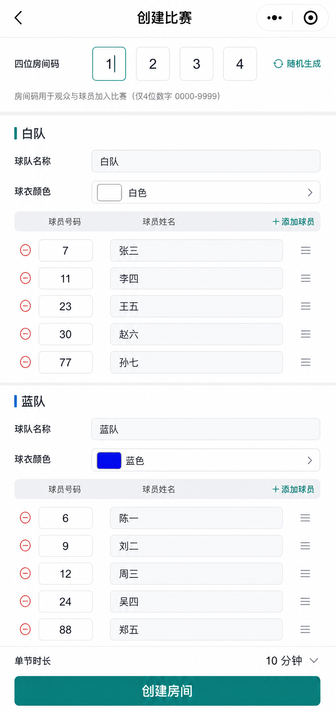
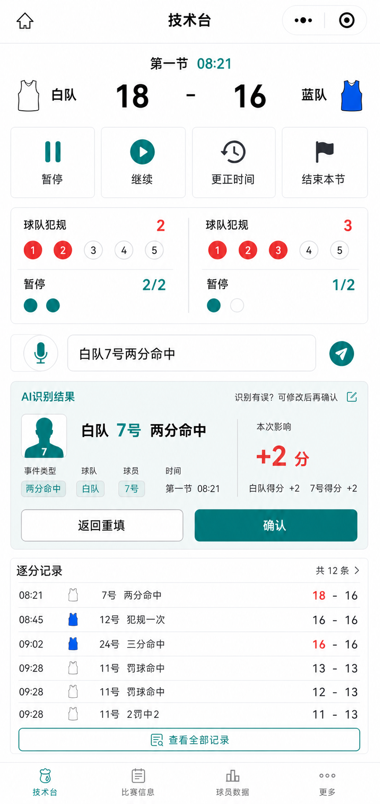
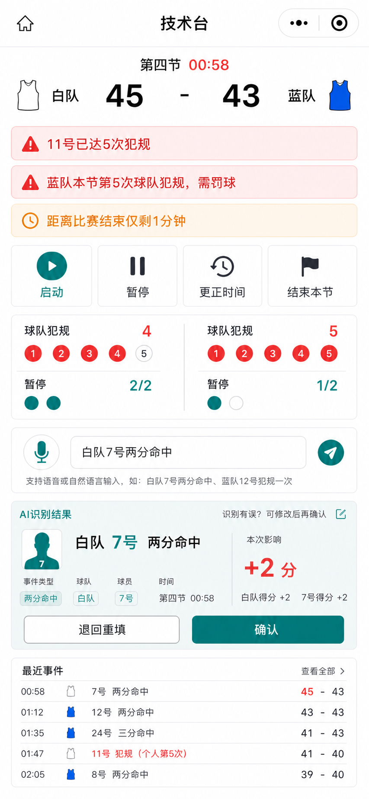

页面流程与交互原型说明 v0.4
本文档用于固定首版微信小程序的页面边界、页面跳转、角色权限和关键交互。 它不是最终视觉稿，而是开发前的页面蓝图；下方效果图用于帮助确认页面信息层级和操作方式。
目录
1. 设计目标
技术员侧
- 单人可独立完成建赛、录入、确认、纠错和导出。
- 高频信息首屏可见：比分、节次、时间、犯规、暂停、规则提醒。
- 自然语言输入是主入口，确认动作必须醒目。
观众侧
- 通过四位房间码快速进入。
- 只读查看，不出现会误导的编辑入口。
- 比赛信息优先于说明性内容，打开即看结果。
2. 总体流程
1. 加入比赛
观众输入四位房间码；技术员可从此进入创建比赛。
2. 创建比赛
技术员配置球队、球员、球衣颜色、单节时长。
3. 技术台
比赛中录入事件、确认 AI 解析、管理时间线。
4. 比赛信息
观众只读查看同一场比赛的实时数据。
5. 赛后确认
双方队长签字，生成留档和正式计分表。
核心原则
技术员与观众尽量共用同一套比赛信息结构，只在权限和可操作控件上分叉。
3. 页面与跳转关系
| 起点 | 动作 | 目标页面 | 说明 |
|---|---|---|---|
| 加入比赛页 | 输入有效四位房间码 | 比赛信息页 | 观众 / 球员只读进入。 |
| 加入比赛页 | 点击创建比赛 | 创建比赛页 | 技术员开始建赛。 |
| 创建比赛页 | 完成必填项并创建房间 | 技术台页 | 系统建立房间并进入主控界面。 |
| 技术台页 | 比赛结束 | 赛后确认页 | 锁定比赛结果，进入签字与导出。 |
| 赛后确认页 | 双方签字并确认生成留档 | 导出动作 / 归档状态 | 房间销毁，导出 PDF 和正式计分表。 |
4. 角色与模式
| 页面 | 技术员 | 观众 / 球员 | 队长 |
|---|---|---|---|
| 加入比赛页 | 可创建比赛 | 可输入房间码 | 可输入房间码 |
| 创建比赛页 | 可编辑 | 不可见 | 不可见 |
| 技术台页 | 可编辑、可确认、可纠错 | 不可进入 | 不可进入 |
| 比赛信息页 | 可查看 | 只读查看 | 只读查看 |
| 赛后确认页 | 发起确认与导出 | 不可操作 | 完成签字 |
5. 页面原型
5.1 加入比赛页

页面目标
让观众、球员最快速进入比赛；同时给技术员一个明显的“创建比赛”入口。
核心组件
- 四位房间码输入框。
- 主按钮：
进入比赛。 - 次按钮：
创建比赛。 - 辅助提示：比赛结束后房间自动销毁。
交互规则
- 房间码必须为四位数字。
- 无效房间码直接报错，不进入空页面。
- 技术员创建比赛与观众加入比赛在同页完成分流。
5.2 创建比赛页

页面目标
在一页内完成首版所有赛前配置，不引入多步向导。
核心组件
- 四位房间码设置。
- 双方球队名称、球衣颜色。
- 球员号码与姓名录入。
- 单节时长。
- 主按钮：
创建房间。
交互规则
- 首版不做名单导入，只支持手动录入或复制粘贴。
- 高级信息采用可折叠区，包含赛事名称、地点、裁判等正式表头字段。
- 球队、号码、姓名是进入比赛前的必填项。
- 同队号码重复时应在本页直接提示。
5.3 技术台页

页面目标
让单人技术员在一屏内完成实时记录和确认，不在高频操作中跳页。
核心组件
- 顶栏：节次、时间、双方比分。
- 提醒区：个人 5 犯、球队第 5 犯罚球、最后 1 分钟提醒。
- 计时控制区：开节前显示启动；比赛进行中显示暂停；暂停后显示继续；更正时间、结束本节常驻。
- 状态区：球队犯规、暂停。
- 输入区：文本框、语音按钮。
- AI 识别结果卡片：标准事件、影响、
确认、退回重填。 - 逐分记录列表。
交互规则
- 正式数据只在点击确认后变化。
- 非标准输入统一返回重新填写，不做对话式追问。
- 撤销、修正、补录都应从事件时间线进入。
- 普通比赛态首屏也必须显示计时控制，不能只在提醒态出现。
- 暂停额度按上半场 2 次、下半场 3 次、每个加时 1 次显示和扣减。
5.4 技术台提醒态

页面目标
在不打断技术员主流程的前提下，把必须即时处理的规则节点放到首屏最显眼区域。
关键提醒
- 球员个人犯规达到 5 次。
- 球队单节累计第 5 次及之后犯规，需要罚球。
- 比赛距离结束仅剩 1 分钟。
交互规则
- 提醒必须自动出现，不能依赖技术员主动查看二级页面。
- 提醒可被确认已读，但不能静默消失后无记录。
- 提醒与计时控制同时可见，便于临场处理。
5.5 比赛信息页

页面目标
为观众和球员提供清晰、稳定、只读的实时信息视图。
核心组件
- 比分、节次、比赛时间。
- 球队犯规与暂停。
- 逐分记录。
- 球员数据页签，首版先承载正式计分相关数据。
交互规则
- 明显标识
只读查看。 - 不出现输入框、确认按钮、纠错按钮。
- 数据与技术台页保持同源。
5.6 赛后确认页

页面目标
把“核对结果、双方签字、生成留档”收拢在一次明确的收尾动作里。
核心组件
- 最终比分。
- 逐节比分。
- 双方队长签名区。
- 主按钮：
确认并生成留档。 - 导出入口：PDF、正式计分表。
交互规则
- 双方队长签字完成前，不允许生成最终留档。
- 确认后比赛结果锁定，房间销毁。
- 后续如需修正，应生成新版本，不覆盖原件。
6. 关键交互规则
| 交互点 | 规则 |
|---|---|
| 自然语言输入 | 文本和语音统一转成标准事件草稿；正式数据必须确认后才生效。 |
| 语音输入 | 火山引擎只负责转写，转写文本必须可见且可修改。 |
| 输入退回 | 缺球队 / 球员 / 事件时，统一退回重填，不做逐项追问。 |
| 逐分记录 | 既用于展示，也作为撤销、修正、补录的入口。 |
| 计时控制 | 技术台页首屏支持启动、暂停、继续、更正时间和手动结束本节比赛；进行中显示暂停，暂停后显示继续。 |
| 暂停额度 | 按上半场 2 次、下半场 3 次、每个加时 1 次管理。 |
| 规则提醒 | 个人 5 犯、球队第 5 犯及之后需罚球、最后 1 分钟时必须在首屏提醒。 |
| 只读模式 | 观众与球员不应看到任何编辑、确认、撤销入口。 |
| 赛后签字 | 只要求双方队长签字，签字完成后才能生成正式留档。 |
7. 关键状态与异常
| 状态 / 异常 | 页面表现 |
|---|---|
| 无效房间码 | 加入比赛页就地提示，不进入下一页。 |
| 观众进入 | 匿名只读进入比赛信息页，不出现登录阻塞。 |
| 同队号码重复 | 创建比赛页阻止提交，并定位到冲突字段。 |
| AI 识别未通过 | 技术台页显示退回提示，不改变正式比分。 |
| 个人第 5 次犯规 | 技术台页出现高优先级提醒。 |
| 球队第 5 次及之后犯规 | 技术台页提示进入罚球状态。 |
| 比赛仅剩 1 分钟 | 技术台页出现倒计时提醒。 |
| 球员不存在 | 技术台页提示名单不匹配，不生成事件。 |
| 比赛结束后再次访问房间 | 提示房间已销毁。 |
| 签字后发现错误 | 进入更正版流程，不覆盖原留档。 |
| 网络断开 | 技术台页明确提示断网；首版不支持离线续记。 |
8. 页面验收标准
- 从首页到建赛、比赛中记录、赛后留档，主流程不超过 5 个核心页面。
- 技术员页首屏必须同时看见比分、时间、犯规、暂停、计时控制、输入区、确认区和规则提醒。
- 观众页必须是严格只读，不复用技术员操作控件。
- 所有关键状态都有明确反馈，不依赖用户猜测。
- 页面设计适合微信小程序竖屏使用，默认面向手机操作。
9. 版本记录
| 版本 | 日期 | 变更摘要 |
|---|---|---|
| v0.1 | 2026-05-18 | 建立首版页面流程、角色模式、交互规则，并补充 5 张微信小程序效果图。 |
| v0.2 | 2026-05-18 | 补充计时控制、暂停额度和规则提醒，并新增技术台提醒态效果图。 |
| v0.3 | 2026-05-18 | 补充普通比赛态计时控制效果图，并明确暂停、继续和更正时间在首屏可见。 |
| v0.4 | 2026-05-18 | 补充匿名只读、创建页高级信息和断网提示等首版实施决策。 |